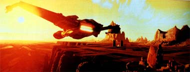
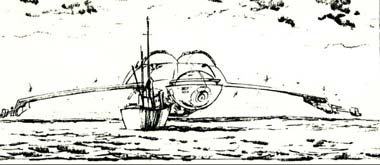
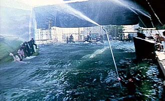
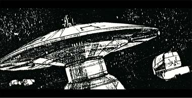

|

STAR TREK IV:
THE VOYAGE HOME
1986


Sinopse
comentada
Comentrios
Citaes
Efeitos
Especiais
Trilha Sonora
Trivia
Ficha
Tcnica
O
DVD
Meus Amigos,
Estamos
em Casa...
Os efeitos especiais, embora poucos, so muito eficazes e, pelo menos, so um passo frente dos efeitos dos dois filmes anteriores. curioso notar que a qualidade dos efeitos decaiu, ao invs de melhorar, aps o primeiro filme, que ainda hoje, nesse aspecto, o melhor filme de
Jornada. Os efeitos do segundo filme eram muito inferiores aos do primeiro; e os do terceiro bem inferiores em relao aos do segundo. Neste quarto filme os efeitos melhoraram muito, mas caram em um abismo no quinto filme. A partir do sexto melhoraram de novo.
O maior diferencial em A Volta para Casa que muitos efeitos no se restringem s tpicas cenas de naves espaciais, tiros de feisers e teletransporte. Temos aqui espetaculares baleias mecnicas, que no parecem falsas em nenhum momento do filme, e que foram usadas nas tomadas de aproximao, quando so vistas de perto.

Apenas a cauda das baleias e parte superior dos seus corpos foram construdas em tamanho real, para uso nas cenas no tanque. Nas tomadas em que as vemos por inteiro foram utilizadas miniaturas controladas por controle remoto. Pouqussimas cenas tm baleias de verdade, como as que elas so vistas saltando na gua nas cenas finais do filme.
O sucesso das tomadas foi to grande que a equipe de produo chegou a ser abordada por sociedades protetoras dos animais, que fizeram protestos contra o uso de baleias para a execuo de algumas cenas. Com muita alegria, o pessoal do filme informou que em nenhum momento foram usados animais de verdade, para nenhuma das tomadas. O resultado de fato merecedor de aplausos.

Um outro destaque especial vai para o delrio/sonho de Kirk durante o processo de viagem no tempo at o sculo 20. Uma sequncia de imagens psicodlicas, com as cabeas de seus tripulantes emergindo de uma nvoa etrea, seguidas pela apario de uma baleia corcunda e a concluso at o despertar de Kirk em meio a uma ponte de comando avermelhada e muitos monitores fora do ar. Embora tenha ficado estranha no contexto da histria em si (ademais, nunca vimos efeitos alucingenos de viagens temporais no universo de Jornada antes), impossvel negar que, enquanto sequncia experimental de efeitos especiais, ficou muito bonito.
Algumas outras sequncias exticas incluem a desafiadora representao dos oceanos terrestres evaporando em ritmo alucinante. Embora ainda deixem a desejar em termos de verossimilhana, os efeitos do a noo exata do que est acontecendo ao planeta. Nesse sentido, muito mais feliz foi a realizao das cenas-clmax do filme, em que a Ave de Rapina Klingon passa sob a ponte Golden Gate e faz um pouso forado no mar, onde ocorre a libertao das baleias. Um tanque localizado sob o estacionamento da Paramount foi usado para as filmagens com os atores, e o efeito foi auxiliado por uma simulao de "forte chuva" por meio de poderosos esguichos.

As cenas no espao, com naves, tambm so excelentes. A sonda espacial possui um design muito simples e muito especial ao mesmo tempo, pois ressalta a sensao de um objeto avanado e misterioso. A nova Enterprise, vista apenas nos minutos finais do filme, tem seu esplndido visual resgatado como no se via desde o primeiro filme.
